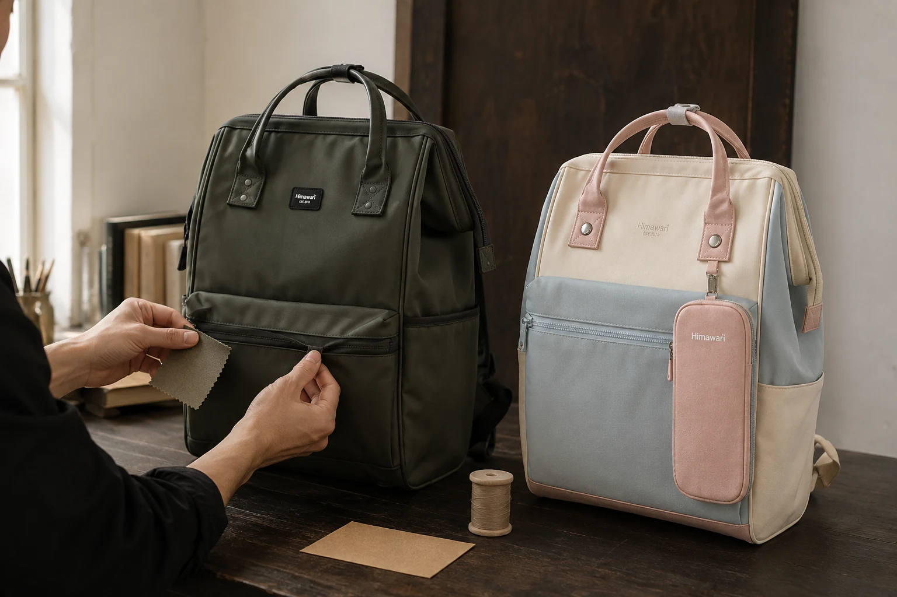

브랜드의 약속을 가방의 선택 기준으로 읽기

가방은 집을 나설 때 준비한 물건이 하루를 마치고 돌아오는 자리입니다. 아침의 서류와 기기를 담고 이동 중에는 작은 소지품을 꺼내며 저녁에는 받은 종이와 사용한 물건을 다시 정리합니다. 브랜드가 오래 쓰는 가방을 이야기할 때 독자가 궁금한 것은 이 반복에 어떤 조건이 필요한지입니다. 처음 보았을 때 마음에 드는 모습과 실제로 계속 사용하는 동작이 함께 이어져야 합니다. 가방의 기본을 생각하는 일은 매일의 물건을 놓고 질문하는 과정에서 구체적으로 시작할 수 있습니다.
히마와리의 공개 브랜드 소개는 소재와 착용감, 수납을 기본 기준으로 내세웁니다. 오래 보아도 계속 쓰고 싶은 형태와 여러 취향 사이의 균형도 이야기합니다. 이 방향을 읽을 때 제품에서 어떤 정보를 확인할지로 이어보면 도움이 됩니다. 소재는 관리할 조건으로, 착용감은 실제 짐을 담아 메는 동작으로, 수납은 물건을 꺼내고 되담는 순서로 질문할 수 있습니다. 브랜드가 중요하게 말하는 방향과 개인이 확인해야 하는 사용 조건을 함께 놓고 읽는 방식입니다.
모양을 좋아하는 이유와 쓰임의 이유
제품 사진에서 마음에 드는 가방을 고르는 이유는 사람마다 다릅니다. 색이 지금 입는 옷과 잘 연결되거나 외형이 원하는 분위기와 가까울 수 있습니다. 그 선택 이유를 굳이 수납 기능으로만 설명할 필요는 없습니다. 다만 매일 사용할 가방이라면 실제 짐을 담은 모습도 함께 보고 싶어집니다. 옷이 바뀌는 계절과 자료가 늘어나는 날에 어떤 조건이 달라지는지 생각해볼 만합니다. 취향을 구체적으로 알고 있으면 그 모습과 이어질 사용 조건도 더 정확하게 물을 수 있습니다.
수납을 생각할 때도 모든 물건의 자리를 세분할 필요는 없습니다. 어떤 사람은 큰 파일 한 묶음을 먼저 꺼내고, 다른 사람은 열쇠와 연락 도구를 반복해서 찾습니다. 같은 가방에서 필요한 칸과 여는 순서는 다릅니다. 브랜드의 제품 목록을 읽기 전에 자신의 물건을 펼쳐 사용 시점을 확인하면 어떤 안내가 필요한지 보입니다. 가장 큰 물건이 입구를 지나가는지, 작은 물건이 사용 뒤 같은 곳으로 돌아오는지가 구체적인 질문입니다. 칸의 수를 많이 갖는 목표와 자신의 동작을 정하는 목표를 나누어 생각할 수 있습니다.
이런 질문의 실제 제품 예시로 Himawari No.1884 제품 정보를 살펴볼 수 있습니다. 이 제품의 외부 크기는 가로 30 × 세로 45 × 폭 20cm이며 자신의 물건과 대조할 출발점이 됩니다. 기기나 파일을 넣을 계획이라면 그 실제 외형을 알고 내부와 입구에 관해 어떤 정보가 더 필요한지 확인합니다. 제품 하나를 모든 사람의 하루에 맞는 답으로 만들기보다 자신이 계속 사용할 조건을 구체적으로 묻는 예시로 보는 것입니다. 같은 모델을 검토해도 남기는 질문은 서로 다를 수 있습니다.

착용과 관리도 일상에서 묻기
가방을 실제로 메어볼 수 있다면 빈 상태의 인상과 평소 짐을 담은 상태를 구분합니다. 자주 입는 겉옷으로 메고 내리는 동작을 하고, 제품 안내에 따라 조절할 수 있는 부위를 살펴봅니다. 다른 사람의 착용 사진이 자신의 결과를 대신해주지는 않으므로 현재 몸과 물건에서 어떤 면이 닿는지 확인할 필요가 있습니다. 책상에서 필요한 자료를 꺼내고 다시 들고 나가는 동작까지 이어보면 착용을 하나의 장면으로만 보지 않게 됩니다. 어느 순간이 불편한지 알면 필요한 정보도 더 좁혀집니다.
오래 사용할 물건이라는 생각은 관리 질문으로 이어집니다. 표면을 어떤 방식으로 정리할 수 있는지, 젖거나 사용 흔적이 생겼을 때 어떤 안내를 따라야 하는지 확인합니다. 소재 이름만으로 완성된 가방의 모든 관리 방법을 정하지 않고 제품의 표시를 읽어야 합니다. 여밈이나 부품에 문제가 생겼을 때 상담할 방법이 있는지도 물을 수 있습니다. 이런 정보는 새 제품의 모습과 다른 시간에서 필요한 내용입니다. 처음 선택할 때 함께 알아두면 나중에 현재 상태를 설명할 자료가 남습니다.
상품 정보가 부족할 때는 무조건 확신할 필요가 없습니다. 자신의 물건과 필요한 동작을 구체적으로 남기고 그 조건에 관한 자료를 확인하면 됩니다. 기기의 인치보다 케이스를 포함한 실제 외형을, 출근용이라는 용도 이름보다 꺼낼 자료의 순서를 질문할 수 있습니다. 사용 조건을 정확히 묻는 일은 브랜드의 방향을 의심하는 태도처럼 볼 필요도 없습니다. 제품을 자신이 어떻게 쓰려는지 알려주고 그에 필요한 정보를 대조하는 과정입니다. 답변의 범위가 분명하면 선택할 이유도 설명하기 쉬워집니다.
계속 사용할 물건을 선택한다는 것
일상에서 짐의 양과 목적지는 달라집니다. 출근과 여행에 같은 가방을 쓰기도 하고 계절이나 활동에 따라 다른 묶음을 담기도 합니다. 모든 상황을 하나로 해결하려 하기보다 반복되는 사용에서 무엇이 공통인지 볼 수 있습니다. 같은 파일과 연락 도구를 계속 쓴다면 그 묶음의 자리를 남기고 일정에만 필요한 물건을 추가합니다. 이 방식은 제품 기능을 새로 약속하는 것이 아니라 자신의 쓰임을 분명하게 정하는 일입니다. 가방을 고른 뒤에도 사용 조건은 생활에 맞춰 조금씩 조정할 수 있습니다.
브랜드가 말하는 기본은 독자의 질문에서 서로 다른 모습으로 이어집니다. 색과 형태를 계속 좋아할 수 있는지, 평소 물건을 찾아 쓰는 동작이 가능한지, 관리할 조건을 알고 있는지를 함께 봅니다. 마음에 든 제품에서 확인할 질문이 남았다면 실제 정보와 대조한 뒤 선택할 수 있습니다. 하루를 마친 뒤 가방 안의 물건을 꺼내 제자리로 돌려놓는 순간에도 같은 기준이 남습니다. 어떤 물건을 담고 어떤 동작을 반복하려고 골랐는지가 분명한 가방이라면 앞으로 바뀔 짐도 그 기준에 맞춰 다시 살펴볼 수 있습니다.